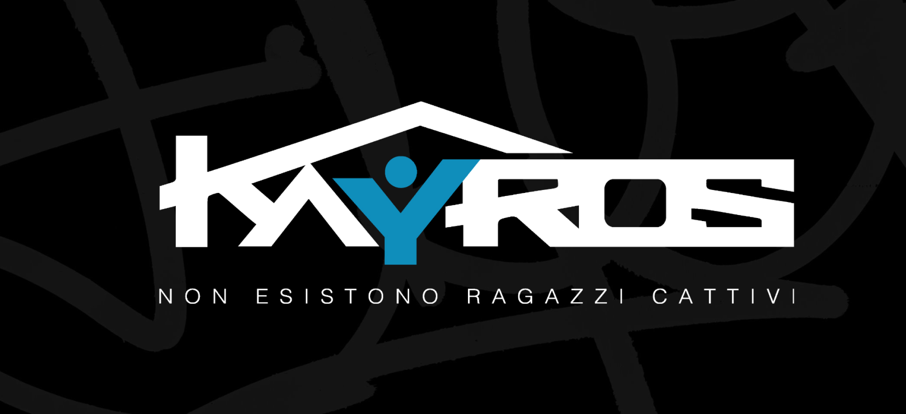
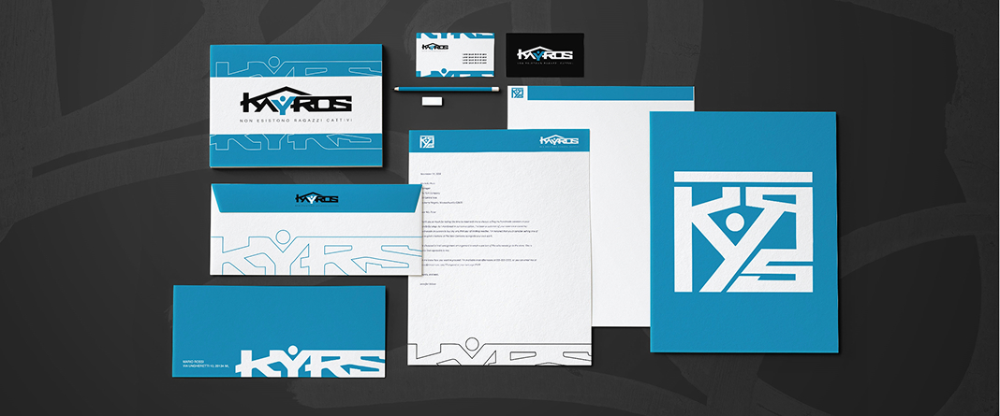
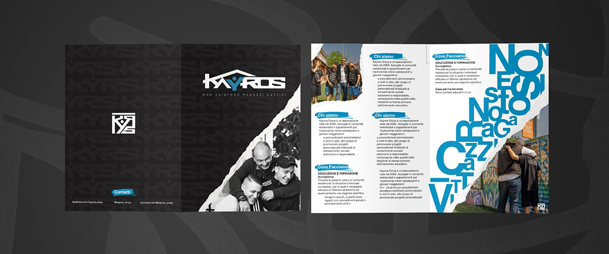

Non esistono ragazzi cattivi
KAYROS
Un percorso di rebranding che unisce strategia, creatività e comunicazione per dare maggiore forza e riconoscibilità alla realtà di Kayros.
Kayros – Un’identità che racconta una seconda possibilità
Per Kayros – Non esistono ragazzi cattivi – abbiamo sviluppato un progetto di rebranding e di declinazione dell'identità visiva, con l'obiettivo di valorizzare una realtà che ogni giorno accompagna adolescenti e giovani adulti in percorsi di crescita, inclusione e riscatto attraverso attività educative, artistiche e musicali. La comunità offre infatti opportunità concrete di reinserimento sociale, facendo della musica uno dei principali strumenti di espressione e rinascita.
Il progetto è partito dal restyling del logo, studiato per rappresentare in modo più contemporaneo e riconoscibile i valori di accoglienza, speranza e cambiamento che contraddistinguono Kayros. Da questa nuova identità è nato un sistema visivo coerente, capace di adattarsi ai diversi punti di contatto dell'associazione e di rafforzarne la presenza sul territorio.
Abbiamo inoltre progettato una linea di merchandising coordinato, pensata non solo come strumento di comunicazione, ma anche come elemento in grado di trasmettere il senso di appartenenza alla comunità e di diffondere il messaggio positivo dell'associazione.
Il lavoro è stato completato con una serie di proposte per l'allestimento degli spazi della sede e lo sviluppo grafico di ulteriori supporti fisici e istituzionali. Ogni concept è stato realizzato con l'obiettivo di creare un'identità forte, riconoscibile e facilmente declinabile, capace di accompagnare Kayros nelle sue attività quotidiane e negli eventi pubblici, contribuendo a raccontare con coerenza una realtà che crede nel valore delle persone e nella possibilità di offrire a ogni ragazzo una nuova occasione.

